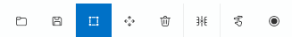

震动控制标签页（Stroke Tab）¶
震动控制标签页用于设计和控制设备运动（动作）模式。
你可以按时间轴控制各个轴（Axis）的运动，
从而构建震动、旋转、往复等物理动作模式。
所有震动数据都保存在项目内部目录 Asset/Stroke/ 中，
同时支持与外部格式（.funscript）的导入 / 导出兼容。
1. 基本界面¶

| 组件 | 说明 |
|---|---|
| ① 导入 | 导入已保存的 .stroke 文件。 |
| ② 新建 | 创建一个新的震动模式。 |
| ③ 编辑 ✏️ | 打开所选震动模式的详细编辑窗口。 |
| ④ 删除 🗑️ | 从项目中移除选定的震动模式。 |
| ⑤ 打开文件夹 📂 | 直接打开 Asset/Stroke/ 文件夹。 |
💡 提示：
震动控制标签页的结构与 Live2D 标签页相同，
你可以在“动作模式”列表中添加或编辑震动模式。
2. 震动编辑器（Stroke Editor）¶
点击“新建”或“编辑”按钮后，将打开
Stroke Editor（震动编辑器） 窗口，
你可以在此调整每个轴的运动、速度与范围。

🎛️ 顶部面板¶
| 项目 | 说明 |
|---|---|
| 名称 | 设置当前震动模式的名称。 |
| 类型 | 选择震动的执行方式。 |
| 时间固定 | 保持整体播放时间固定。 |
| 速度调节 | 是否根据变量动态调整速度。 |
| 幅度调节 | 是否根据变量动态调整运动幅度。 |
| 轴类型 | 选择 单轴、单旋转轴 或 多旋转轴。 |
| 长度 | 设置模式总时长（以毫秒为单位）。 |
| 缩放(%) | 调整预览界面的显示比例。 |
🧰 工具栏¶
编辑器顶部提供了主要的编辑工具栏，
可快速切换编辑模式并支持快捷键操作。

| 图标 | 名称 | 快捷键 | 说明 |
|---|---|---|---|
| 📂 | 导入 | — | 导入外部 .funscript 文件。 |
| 💾 | 导出 | — | 将当前模式保存为 .funscript 格式。 |
| ⬜ | 选择工具 | — | 选择点或区域，是默认编辑工具。 |
| ✥ | 移动工具 | M | 拖动移动选中的点或曲线。 |
| 🗑️ | 删除 | Del | 删除选中的点。 |
| ✂️ | 剪切 | — | 保留选定区域并删除其他部分。 |
| ➕ | 添加点 | — | 点击图表添加新的控制点。 |
| ⏺️ | 录制（未支持） | — | 基于设备实时输入记录动作（暂未启用）。 |
💡 提示：
工具可通过快捷键即时切换。
例如按M切换为移动工具，按S返回选择工具。⚙️ 说明：
.funscript是一种通用的开放式动作格式，
可与大多数外部设备或软件兼容。
🩰 轴控制¶
左侧的轴列表（L0~R2）表示实际设备的运动轴。
只有勾选启用的轴才会在编辑和播放中生效。
| 轴名 | 说明 |
|---|---|
| L0~L2 | 左侧通道对应的轴。 |
| R0~R2 | 右侧通道对应的轴。 |
| 启用复选框 | 控制是否在时间轴中显示该轴的运动曲线。 |
🧩 图表与时间轴¶
中部的图表区域显示各轴的随时间变化的运动轨迹。
横轴为时间（ms），纵轴为运动值（0~100%），
通过连接多个控制点形成动作曲线。
- 横轴（Time）： 时间进程
- 纵轴（Value）： 相对位置（百分比）
- 网格线（Grid）： 辅助线，用于区分时间与数值
- 点（Point）： 代表某一时间的轴位置，可自由拖动调整
🎯 图表操作¶
图表为静态编辑界面，
不提供播放或缩放，仅用于编辑和调整点位。
| 操作 | 说明 |
|---|---|
| 选择 (Select Tool) | 点击或拖动选择一个或多个点。 |
| 移动 (Move Tool) | 激活移动工具后可拖动选中点改变位置。 |
| 添加点 (Add Tool) | 点击图表任意处即可新增控制点。 |
| 删除 (Delete) | 按 Delete 键删除选中点。 |
| 剪切 (Trim) | 保留选中范围，删除其他部分。 |
💡 注意：
Stroke Editor 仅用于模式设计，不包含播放功能。
实际运行效果需在 Stroke Player 中查看。
🗺️ 小地图（Minimap）¶
图表下方的小地图显示整个震动模式的概览。
当前编辑区域以矩形高亮，
点击小地图可快速跳转至对应位置。
| 功能 | 说明 |
|---|---|
| 视图移动 | 点击小地图任意区域以滚动至对应位置。 |
| 当前区域显示 | 白色矩形标示当前编辑视图范围。 |
| 模式总览 | 一眼查看整体模式结构与分布。 |
💡 提示：
小地图在长模式编辑时非常有用，
可快速定位或查看整体结构。
3. 震动类型（Stroke Type）¶
震动的行为取决于类型（Type）设置。
可通过以下四种类型实现不同控制方式：
3.1 模式型（Pattern）¶
基于时间自动播放的常规震动模式。
放置于时间轴或通过脚本触发时，
将按设定顺序自动播放。
| 特点 | 说明 |
|---|---|
| 自动播放 | 放置在时间轴上后按时间自动运行。 |
| 速度/幅度调整 | 可通过选项动态调整速度与振幅。 |
| 循环播放 | 可在脚本中设置循环执行。 |
3.2 手动触发（Manual）¶
每次按下 Space 键时播放一次。
适用于交互式触发或即时控制场景。
| 项目 | 说明 |
|---|---|
| 单次播放 | 每按一次键触发一次震动。 |
3.3 鼠标控制（Mouse Control）¶
实时追踪鼠标移动来控制轴的运动。
L0 对应垂直移动，R0 对应水平移动。
| 项目 | 说明 |
|---|---|
| L0 轴 | 跟随鼠标上下移动。 |
| R0 轴 | 跟随鼠标左右移动。 |
| 实时控制 | 根据鼠标当前位置实时变化。 |
3.4 倒计时模式（Countdown）¶
倒计时类型基于射精阶段（Progress）与计数值（Counter）的交互，
动态调整模式的速度与形态，是一种高级控制方式。

| 项目 | 说明 |
|---|---|
| 0~10 阶段按钮 | 为每个计数阶段分配不同的模式。 |
| 模式设置面板 | 根据计数值与射精阶段设定执行的模式。 |
| 重置按钮 | 点击左上角重置模式设置。 |
| 面板图表 | 横轴为计数，纵轴为射精阶段（Progress），格子数值代表对应模式编号。左键递增，右键递减。 |
| 计数音效 | 指定每次计数时播放的音效。 |
⚙️ 速度惩罚（Penalty Speed）¶
| 项目 | 说明 |
|---|---|
| 最大惩罚速度 | 当计数值 小于射精阶段 时（距离较远），速度加快。 |
| 最小惩罚速度 | 当计数值 接近射精阶段 时（距离较近），速度减慢。 |
💡 示例
- Counter = 1，Progress = 10 → 速度 最大加速
- Counter = 10，Progress = 1 → 速度 最小减速
4. 脚本联动（Script Integration）¶
| 命令 | 说明 |
|---|---|
| StrokeExec | 在指定时间播放特定震动模式。 |
💡 提示：
你也可以将震动直接拖入时间轴，
与其他资源（音频、Live2D 等）同步执行。
5. 文件结构¶
| 项目 | 路径 |
|---|---|
| 震动数据 | Asset/Stroke/StrokeName.stroke |
| 预览缓存 | Asset/Stroke/ |
⚙️ 说明：
震动数据为项目专用文件。
若移动或重命名文件，
时间轴链接可能会失效。